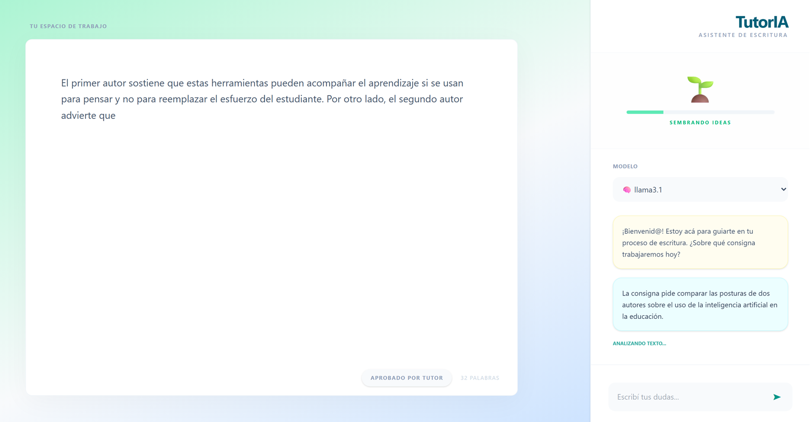
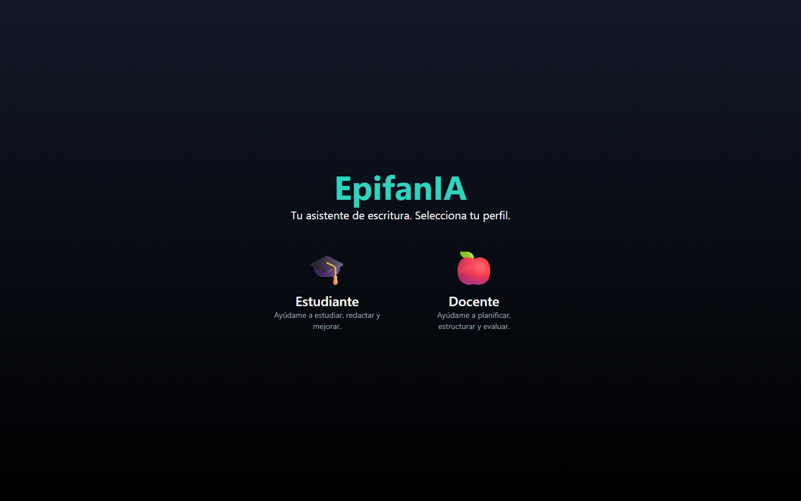
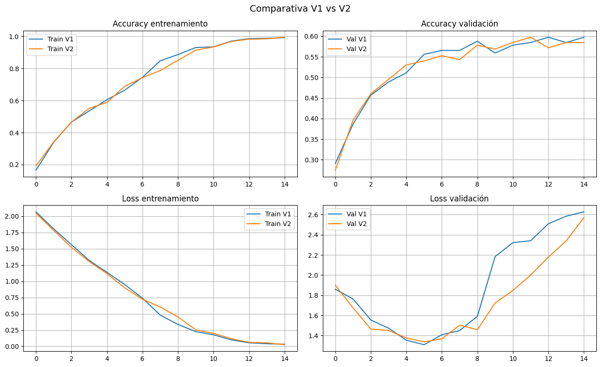
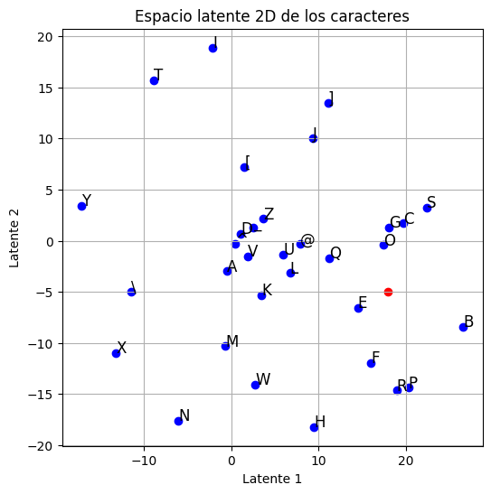

[00]Portfolio 2026
Construyo aplicaciones de IA: desde entrenar redes neuronales hasta correr modelos de lenguaje de forma local.
[—]Sobre mí
Me interesan las herramientas de IA que acompañan a las personas en lugar de reemplazarlas, y los modelos que corren en la propia computadora, sin mandar datos a terceros.
Cuando un modelo falla, quiero entender por qué: mis proyectos de redes neuronales terminan en un diagnóstico, no solo en un número.
[—]Herramientas
[01]Modelos de lenguaje
Un tutor socrático para trabajos académicos: guía con preguntas y no escribe por el estudiante.
[AVANZAR] y la interfaz avanza la barra de progreso.[01]Interfaz

Fig. 1 — El borrador va en el editor; la consigna y las dudas, en el chat. El tutor lee las dos cosas antes de responder.
Los límites están escritos en el prompt: no redacta trabajos, no inventa citas y no avanza de etapa sin una respuesta concreta del estudiante.
[02]Modelos locales
Un asistente de escritura que corre modelos de lenguaje en la propia computadora, sin conexión a internet.
[02]Interfaz

Fig. 2 — Pantalla de inicio. Antes de entrar al editor se elige un perfil: estudiante o docente.
Pendiente: el backend todavía no usa el perfil elegido para adaptar las respuestas.
[03]Visión por computadora
Una red convolucional para 8 especies, y el diagnóstico de por qué no logra generalizar.
[03]Resultados

Fig. 3 — V1 vs V2. La pérdida de validación sube desde la época 6 mientras la de entrenamiento sigue bajando.
Achicar el modelo un 75% no mejoró la generalización: el cuello de botella es el dataset, no la arquitectura.
En la prueba, Tom (de Tom y Jerry) salió clasificado como ave, con 70% de confianza.
[04]Deep learning
Comprimir letras de 7×5 píxeles en solo dos números, y volver a reconstruirlas.
[04]Espacio latente

Fig. 4 — Cada carácter ubicado según sus dos valores latentes. Las formas parecidas quedan cerca.
Con 5% de ruido reconstruye bien; con 30% devuelve otro carácter. Con solo 32 muestras, la red memoriza en lugar de generalizar.
[—]Contacto
El código de todos estos proyectos está en GitHub.
[—]Notas
quien pasó las hojas
Si llegaste hasta acá,
escribime :)
Anah